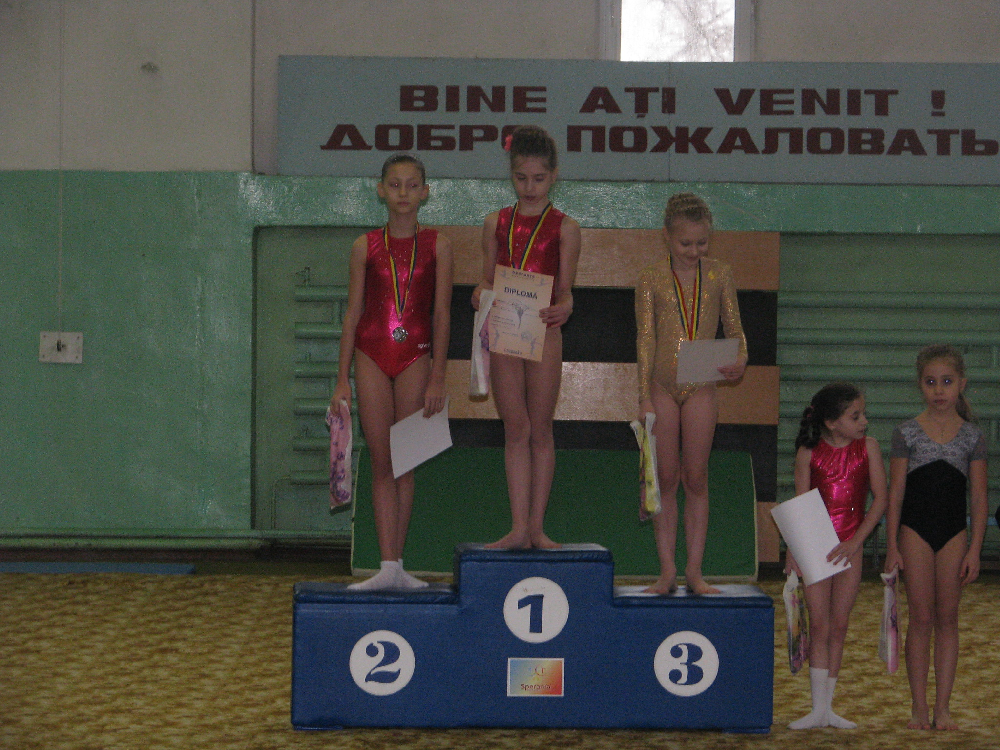

Activitățile practicate
Despre activitățile extrașcolare știm că joacă un rol esențial în formarea personalității sau a unor anumite competențe ale copilului atât pentru succesul lui, cât și pentru o dezvoltare personală și socială armonioasă.
În cazul acestora, vorbim de acele activități în care copiii pot să-și descopere talentele și pasiunile, dar și să-și dezvolte diverse abilități interpersonale, pe care nu le pot deprinde în timpul școlii. În general, activitățile extracurriculare sunt și extrașcolare, spre avantajul celor care le urmează.
| Activități | |
|---|---|
| Ateliere creative de arte frumoase | Despre |
| atelierele de arte stimulează empatia, abilitățile de comunicare și discurs, creativitatea și imaginația. Mai mult, îl ajută să-și înțeleagă emoțiile mult mai bine și să-și dezvolte un mindset sănătos ca viitor adult. | |
| cursuri de limbi străine | Despre |
| Cunoașterea limbilor străine capătă avantaje numeroase și dezvoltă copilul în diverse moduri ,îi dezvoltă o minte mai deschisă, mai ascuțită, dar și un nivel de cultură care îl poate duce departe, acolo unde își dorește. | |
| Cursuri și ateliere de gătit | Despre |
| Există cursurile sau atelierele de gătit unde copilul nu doar că va afla cum se pregătește mâncarea și de ce e sănătoasă, dar își va forma obiceiuri sănătoase de alimentație pentru tot parcursul vieții. | |
| Cursuri de robotică | Despre |
| Aceste cursuri îi dezvoltă creativitatea, gândirea algoritmică și capacitatea de rezolvare a problemelor în mod practic, în timp ce învață să construiască și să programeze roboți. | |
| Sport | Despre |
| sportul ajută copilul să crească armonios, să învețe importanța disciplinei și a perseverenței și să înțeleagă ce înseamnă o competiție. În același timp, se va distra și se va simți tot mai liber și mai încrezător în potențialul său. Și, cine știe, poate va aduce acasă și un trofeu binemeritat! . |
Gimnastica Artistică
Una dintre activitățile mele și probabil cea mai valoroasă dintre toate a fost gimnastica artistică pe care am practicat-o timp de 10 ani.
Gimnastica a reușit sa mă ajute la formarea caracterului meu, la formarea personalității și a reșit să mă dezvolte în nenumărate ramuri
timp de 10 ani am înățat ce e disciplina într-un sport , am învățat sa lucrez împreună cu propriile puteri , să pot să îmi păstrez concentrația și am învățat să colaborez și să lucrez atât în grup cît și cu mine însămi.

Beneficii pentru sanatatea corpului
- Te ajuta sa-ti dezvolti coordonarea
- Îmbunatateste flexibilitatea
- Ajuta la dezvoltarea fortei musculare
Prima notă de 10 din istoria gimnasticii și idolul copilăriei mele
Nadia Elena Comăneci este o gimnastă română, prima gimnastă din lume care a primit nota zece într-un concurs olimpic de gimnastică. Este câștigătoare a cinci medalii olimpice de aur. Este considerată a fi una dintre cele mai bune sportive ale secolului XX și una dintre cele mai bune gimnaste ale lumii, din toate timpurile, „Zeița de la Montreal”, prima gimnastă a epocii moderne care a luat 10 absolut. Este primul sportiv român inclus în memorialul International Gymnastics Hall of Fame.Nadia Comaneci mi-a devenit un exemplu în domeniul gimnasticii , eu încercând să demonstrez că pot avea aceleași competențe.
Gimnastica presupune forta fizica, flexibilitate, echilibru, control, putere, agilitate si coordonare pentru a efectua o varietate de exercitii. Este unul dintre cele mai vechi sporturi din lume, datand de mii de ani, din vremea grecilor antici.
- A evoluat de-a lungul a mii de ani pentru a deveni sportul de azi, desi multe dintre competitii sunt inradacinate in exercitii antice. Astazi exista concursuri de gimnastica in multe tari si la nivel international.
- Gimnastica reprezinta o importanta componenta a competitiilor olimpice organizate la fiecare patru ani. Exista organe de conducere pentru gimnastica in fiecare tara, precum si pe plan international
Unele riscuri:
- Entorsele la incheieturi
- Ruptura de labrum
- Ruptura de ligament
- Leziuni ale piciorului si gleznei
Deși gimnastica la noi în Republica Moldova este o ramură care nu este deloc dezvoltată momentan, niciodată nu aș regreta că am practicat-o.Desigur că în comparație cu alte țări , noi în acest domeniu nu prea avem valoare , însă există la noi în țară gimnaști cu potențial uriaș ,dar care din păcate poate fi dezvoltat doar în alte țări

Eu personal am reușit să particip la numeroase competiții și concursuri naționale și internaționale, și de asemenea am reușit să îmi adaug în multe diplome și medalii în colecție , de care acum sunt mândră.